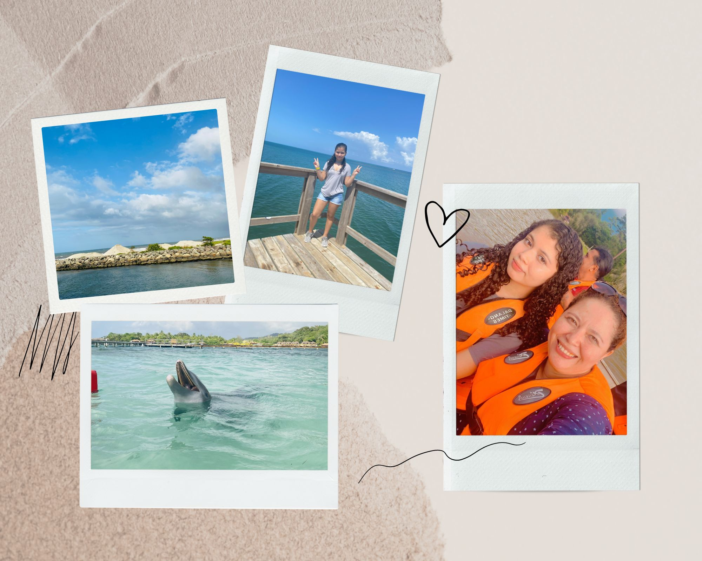

| |
|
|||||
| Roatán | ||||||
|  | Viajé a Roatán en el 2021, fue una experiencia muy agradable, pude conocer lugares bonitos, miré distintas especies de peces y conviví mucho tiempo con mi familia. | |||||
| Copán | ||||||
|
Viajé a Copán en el 2022, visité muchos familiares y conocí nuevas personas, también pude ir a las Ruinas, miré muchas aves de diferentes especies en el parque de las aves, fue un viaje muy bonito. | |||||